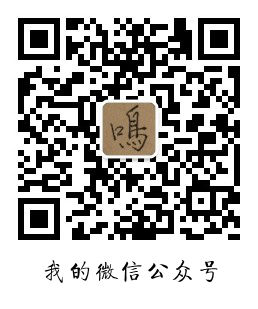

主页
 |
|

联系方式
19454414@life.hkbu.edu.hk
https://github.com/Minghao2812
|  |
教育经历
香港浸会大学
人工智能与数码媒体理学硕士在读（2019/09入学，2020/05毕业）
GPA（第一学期）： 3.73
2019-2020优异奖学金
中国传媒大学
工学学士，自动化专业
2019届毕业生“三好学生”
学术训练 & 已修课程
数据挖掘与知识发现
推荐系统与数码媒体
大数据管理与分析
数码媒体中的人工智能
电路分析基础
模拟电子技术
作品集
A Brief Analyse about Missing Migrants
Twitter Analyst in R
Design2Code: How AI Helps GUI Design
Which One Is Correct? The Decision-Making Process Biased by Media and People’s Existing Memory
研究经历
全国大学生电子设计大赛（2017，北京赛区） 2017/04-2017/08
组长
设计并制作了多种印制电路板（PCB），如：模拟-数字转换器，数字-模拟转换器， 频率计，频谱仪，稳压器，远程幅频特性测试仪。
学会了如何将大任务拆分成小任务，然后将这些小任务有序分配给组员。 我也学会了服从与协作。
学习并熟练掌握了使用Multisim，Altium Designer等软件设计模拟电路。
广播电视数字化教育部工程研究中心（国家重点实验室）& 播音与主持艺术学院，中国传媒大学 2018/05-2018/09
产品经理
发起了“语音评测系统设计”项目
招募组员并申请经费
设计产品功能及界面
广播电视数字化教育部工程研究中心（国家重点实验室），中国传媒大学 2017/09-2019/06
学生科研助理
协助教授整理技术文档
实习经历
浪潮集团有限公司视频联网业务部人工智能小组 2019/11-2020/01
为车辆识别进行车辆品牌的数据清洗
编写关于词嵌入库（如Magnitude，Faiss）的文档
济南日报报业集团济南时报摄影部 2017/08-2017/09
参与选题、采访拍摄、文字撰稿、后期编辑
发表了多篇有关泉水节、艺博会的摄影报道
技能
编程语言：脚本语言 (Python, R)/C/C/CSS/HTML
使用SQL进行数据库管理
使用脚本语言进行数据挖掘与知识发现
电路设计软件：Multisim, Altium Designer
MS Office
纪实摄影（选题，拍摄，编辑）
语言
普通话
英语 (IELTS overall 6.5; reading 7.0; speaking 7.0; listening 6.5; writing 6.0)
粤语（正在学习）
其它经历
曾获中国传媒大学“年度优秀记者”
作为学生会媒体部干事在校内发表多篇报道
多次获得校级奖学金、三好学生